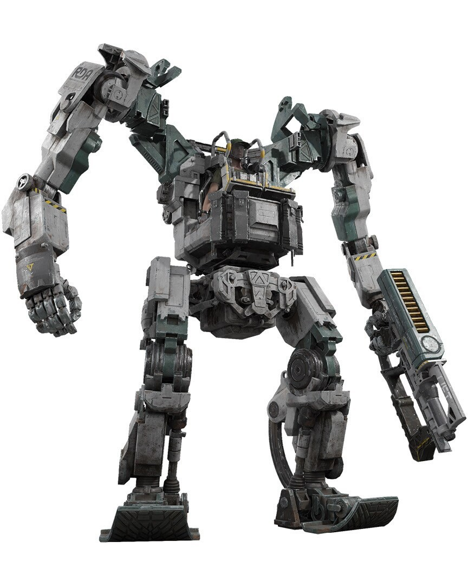
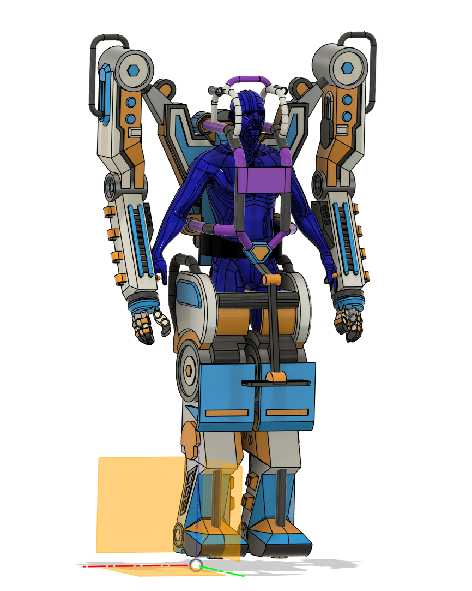
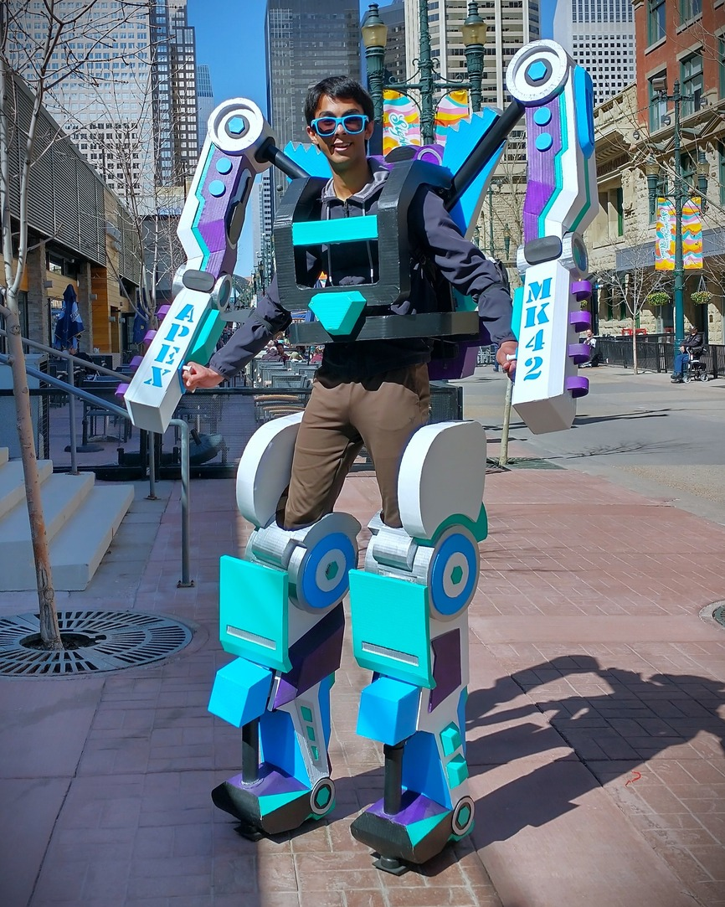
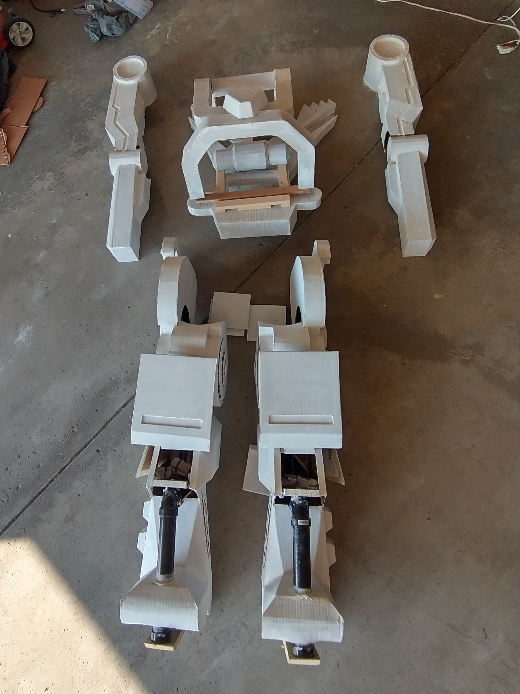
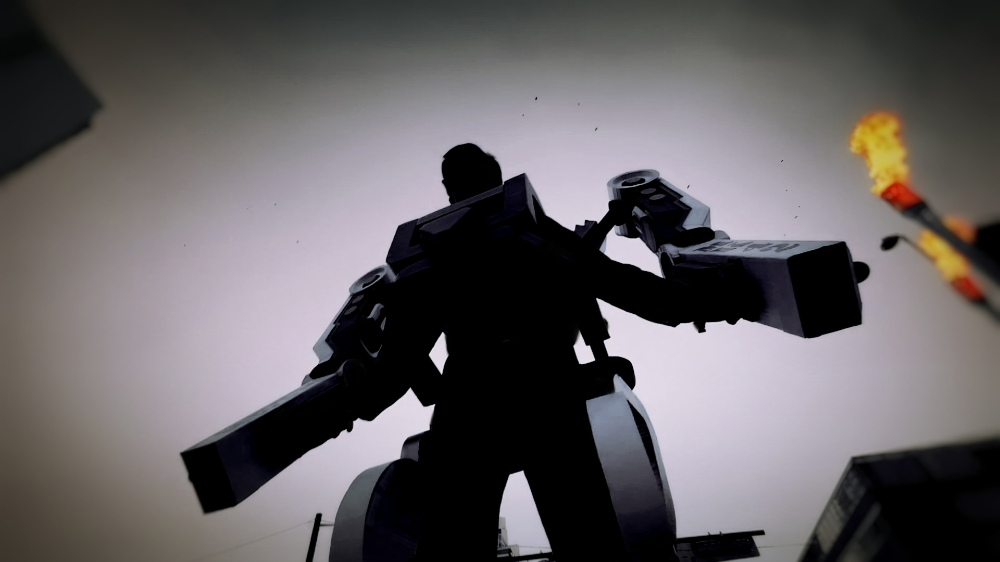

Bipedal Exosuit
Project Overview
Inspired by the film Avatar, I designed a 7-feet tall mechanical exosuit to augment natural human motions. I began with some concept sketches, which I turned into a full CAD model in Fusion 360 to scale the exosuit to my dimensions. I also built scale models of the joints and linkages as a proof-of-concept before building the full-scale exosuit. My family helped a lot with sanding, painting, and other labor-intensive parts of the project!



Build Process
The exosuit was constructed around a wooden load-bearing skeleton with an upper torso and lower stilts. The torso was attached to a backpack with adjustable straps, which allowed it to be worn by users of different heights. To reduce weight, I used PCV piping for longer sections of the skeleton, such as the shins and shoulders. Since the stilts had to support the weight of the user and all other parts of the exosuit, I conducted stress testing to ensure a safety factor of 3.0x my body weight.


After building the skeleton, I created 2D nets of the outer shell from the CAD model and reconstructed it using cardboard. This was much more cost-effective than 3D printing and also resulted in a far lighter exosuit. Before applying paint, I applied body filler to all of the seams and sanded it to achieve a smooth finish.



The most challenging aspect of this project was making it stable enough to walk in, which I achieved by lowering the center of gravity and increasing the width of the stilts. Ultimately, this allowed me to comfortably walk for 2 hours at the Parade of Wonders in Calgary, Alberta. It also looked pretty cool!
